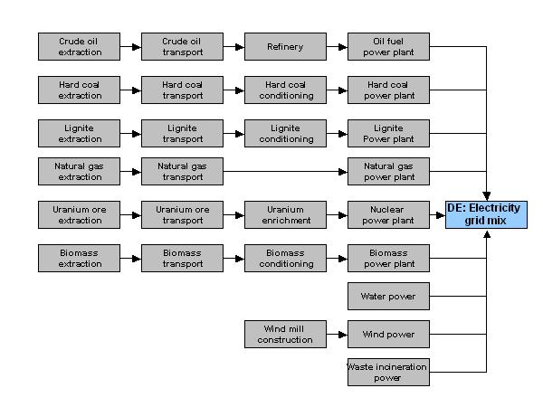

| Process data set: Fictive dataset: Power grid mix; AC; consumption mix, to consumer; 220 V (en) |
| Table of Contents: Process information - Modelling and validation - Administrative information - Inputs and Outputs - LCIA results |
| Process information |
| Key Data Set Information |
| LocationLocation, country or region the data set represents. [Note 1: This field does not refer to e.g. the country in which a specific site is located that is represented by this data set but to the actually represented country, region, or site. Note 2: Entry can be of type "two-letter ISO 3166 country code" for countries, "seven-letter regional codes" for regions or continents, or "market areas and market organisations", as predefined for the ILCD. Also a name for e.g. a specific plant etc. can be given here (e.g. "FR, Lyon, XY Company, Z Site"; user defined). Note 3: The fact whether the entry refers to production or to consumption / supply has to be stated in the name-field "Mix and location types" e.g. as "Production mix".] | DE |
| Geographical representativeness descriptionFurther explanations about additional aspects of the location: e.g. a company and/or site description and address, whether for certain sub-areas within the "Location" the data set is not valid, whether data is only valid for certain regions within the location indicated, or whether certain elementary flows or intermediate product flows are extrapolated from another geographical area. | Average data for Germany. If specific electricity supplier is used (e.g. for site specific modelling), the mix might be different
(e.g. if regional wind power electricity is contracted). No further restrictions. |
| Reference yearStart year of the time period for which the data set is valid (until year of "Data set valid until:"). For data sets that combine data from different years, the most representative year is given regarding the overall environmental impact. In that case, the reference year is derived by expert judgement. | 1999 |
| NameGeneral descriptive and specifying name of the process. |
| Base nameGeneral descriptive name of the process and/or its main good(s) or service(s) and/or it's level of processing.; Treatment, standards, routesSpecifying information on the good, service, or process in technical term(s): treatment received, standard fulfilled, product quality, use information, production route name, educt name, primary / secondary etc. Separated by commata.; Mix and location typesSpecifying information on the good, service, or process whether being a production mix or consumption mix, location type of availability (such as e.g. "to consumer" or "at plant"). Separated by commata.; Quantitative product or process propertiesFurther, quantitative specifying information on the good, service or process in technical term(s): qualifying constituent(s)-content and / or energy-content per unit etc. as appropriate. Separated by commata. (Note: non-qualifying flow properties, CAS No, Synonyms, Chemical formulas etc. are documented exclusively in the "Flow data set".) |
| Fictive dataset: Power grid mix; AC; consumption mix, to consumer; 220 V |
|
| Identifier of sub-data setIdentifier of a sub-set of a complete process data set. This can be the life cycle stage that a data set covers (such as used in EPDs for modular LCI reporting, with the inventory split up into "resource extraction stage", "production stage", "use stage" and "end-of-life stage"). Or it can be e.g. the type of emission source from which the elementary flows of the Inputs and Outputs stems (e.g. "incineration-related", "transport-related", etc.). Together with the field "Complementing processes" this allows to split up a process data set into a number of clearly identified data sets, each carrying only a part of the inventory and that together represent the complete inventory. Care has to be taken when naming the reference flow, to avoid misinterpretation. | Energy conversion |
| Use advice for data setSpecific methodological advice for data set users that requires attention. E.g. on inclusion/exclusion of recycling e.g. in material data sets, specific use phase behavior to be modelled, and other methodological advices. See also field "Technological applicability". | No special use advice; grid losses are included. (This data set is intended exclusively to show the rough use of (almost) all documentation
fields, NOT good documentation or LCA practice or a consistent/valid data set.) |
| Technical purpose of product or processDescription of the intended / possible applications of the good, service, or process. E.g. for which type of products the material, represented by this data set, is used. Examples: "This high purity chemical is used for analytical laboratories only." or "This technical quality bulk chemical is used for large scale synthesis in chemical industry.". Or: "This truck is used only for long-distance transport of liquid bulk chemicals". | Use for (typically small to medium) electrical appliances at 220 V AC. |
| SynonymsSynonyms / alternative names / brands of the good, service, or process. Separated by semicolon. | de Elektrischer Strom; Elektrizität; Strom |
| Complementing processes"Process data set(s)" that complement this partial / sub-set of a complete process data set, if any and available as separate data set(s). The identifying name of this sub-set should be stated in the field "Identifier of sub-data set". |
| Complementing process (process data set)reference to one complementing process | any complementing process |
|
| ClassificationOptional statistical or other classification of the data set. Typically also used for structuring LCA databases. |
|
| General comment on data setGeneral information about the data set, including e.g. general (internal, not reviewed) quality statements as well as information sources used. (Note: Please also check the more specific fields e.g. on "Intended application", "Advice on data set use" and the fields in the "Modelling and validation" section to avoid overlapping entries.) | Good overall data quality. Energy carrier mix information based on official statistical information including import/export. Detailed
power plant models were used, which combine measured emissions plus calculated values for not measured emissions of e.g. single organics and heavy metals. Energy carrier
extraction and processing data is of sufficient to good (e.g. refinery) data quality. Inventory is partly based on primary industry data, partly on secondary literature
data. |
|
|
| Quantitative reference |
| Reference flow(s)One or more of the Inputs or Outputs in case "Type of quantitative reference" is of type "Reference flow(s)". (Data set internal reference.) | Electrical power; AC; 220 V - 1.0 MJ (Net calorific value) |
| Functional unit, Production period, or Other parameterQuantity, name, property/quality, and measurement unit of the Functional unit, Production period, or Other parameter, in case "Type of quantitative reference" is of one of these types. [Note: One or more functional units can also be given in addition to a reference flow.] | Provision of 1 MJ electricity (AC) at 220 V to the consumer |
| Time representativeness |
| Data set valid until:End year of the time period for which the data set is still valid / sufficiently representative. This date also determines when a data set revision / remodelling is required or recommended due to expected relevant changes in environmentally or technically relevant inventory values, including in the background system. | 2004 |
| Time representativeness descriptionDescription of the valid time span of the data set including information on limited usability within sub-time spans (e.g. summer/winter). | Whole year; average mix across seasonal variations. |
| Geographical representativeness |
| Sub-location(s)One or more geographical sub-unit(s) of the stated "Location". Such sub-units can be e.g. the sampling sites of a company-average data set, the countries of a region-average data set, or specific sites in a country-average data set. [Note: For single site data sets this field is empty and the site is named in the "Location" field.] | DE |
| Geographical representativeness descriptionFurther explanations about additional aspects of the location: e.g. a company and/or site description and address, whether for certain sub-areas within the "Location" the data set is not valid, whether data is only valid for certain regions within the location indicated, or whether certain elementary flows or intermediate product flows are extrapolated from another geographical area. | Average data for Germany, no individual sub-locations explicitely considered and combined. |
| Technological representativeness |
| Technology description including background systemDescription of the technological characteristics including operating conditions of the process or product system. For the latter this includes the relevant upstream and downstream processes included in the data set. Professional terminology should be used. | The electricity consumption mix consists of 25.57 % Hard coal power plant, 27.57 % Lignite power plant, 35.91 %
Nuclear power plant, 5.84 % Natural gas power plant, 0.54 % Crude oil power plant, 4.09 % Hydro power plant, 0.31 % Wind power plant, 0.46 % Waste incineration plant, 0.13
% Biomass power plant. Other relevant included process are the refinery and the energy carrier exploitation and extraction processes (the latter ones are not separately
available). |
| Included data sets (process data set)"Process data set(s)" included in this data set, if any and available as separate data set(s). | Hard coal power plant (No URI available) |
| "Process data set(s)" included in this data set, if any and available as separate data set(s). | Lignite power plant (No URI available) |
| "Process data set(s)" included in this data set, if any and available as separate data set(s). | Natural gas power plant (No URI available) |
| "Process data set(s)" included in this data set, if any and available as separate data set(s). | Wind power plant (No URI available) |
| "Process data set(s)" included in this data set, if any and available as separate data set(s). | Fuel oil power plant (No URI available) |
| Pictogramme of technology (source data set)"Source data set" of the pictogramme of the good, service, technogy, plant etc. represented by this data set. For use in graphical user interfaces of LCA software. |  |
| Flow diagramm(s) or picture(s) (source data set)"Source data set" of the flow diagramm(s) and/or photo(s) of the good, service, technology, plant etc represented by this data set. For clearer illustration and documentation of data set. |  |
| Model descriptionDescription of the model(s) represented in this section of mathematical relations. Can cover information on restrictions, model strenghts and weaknesses, etc. (Note: Also see information provided on the level of the individual formula in field "Comment" and in the general process description in the fields in section "Technology".) | Super model for test. |
| Variable / parameter |
|
|
| Modelling and validation |
| LCI method and allocation |
| Type of data setType of the data set regarding systematic inclusion/exclusion of upstream or downstream processes, transparency and internal (hidden) multi-functionality, and the completeness of modelling. | Partly terminated system |
| LCI method principleLCI method principle followed in the product system modelling, i.e. regarding using average data (= attributional = non-marginal) or modelling effects in a change-oriented way (= consequential = marginal). | Attributional |
| Deviation from LCI method principle / explanationsShort description of any deviations from the general "LCI method principles" and additional explanations. Refers especially to specific processes/cases where the stated "attributional" or "consequential" approach was not applied. Or where deviations were made from any specific rules for applying the "Consequential with attributional components" approach. A reference to the "Intended application" of the data collection can be made here, too. Allocated co-products may be reported here as well. In case of no (quantitatively relevant) deviations from the LCI method principle, "none" should be stated. | none |
| LCI method approachesNames briefly the specific approach(es) used in LCI modeling, e.g. allocation, substitution etc. In case of LCI results and Partly terminated system data sets this also covers those applied in the included background system. | Allocation - market value |
| Names briefly the specific approach(es) used in LCI modeling, e.g. allocation, substitution etc. In case of LCI results and Partly terminated system data sets this also covers those applied in the included background system. | Allocation - ability to bear |
| Deviations from LCI method approaches / explanationsDescription of relevant deviations from the applied approaches as well as of the relevant specific approaches that were applied, including in an possibly included background system. Further explanations and details of the allocation, substitution and other consequential approaches applied for relevant processes, e.g. how the marginal substitute was identified, year and region of which market prices were used in market allocation, i.e. method, procedure, data/information details. In case of no (result relevant) deviations from the before stated LCI method approaches, and in case of no need for further explanations, "none" is entered. | None |
| Modelling constantsShort identification and description of constants applied in LCI modelling other than allocation / substitution, e.g. systematic setting of recycling quota, use of gross or net calorific value, etc. | All data used in the calculation of the LCI results refer to net calorific value. For the transport of energy carriers average transport
processes (ship, pipeline, rail, road) are used. |
| Deviation from modelling constants / explanationsShort description of data set specific deviations from the "Modelling constants" if any, including in the possibly included background system. | None |
| LCA methodology report (source data set)"Source data set"(s) where the generally used LCA methods including the LCI method principles and specific approaches, the modelling constants details, as well as any other applied methodological conventions are described. | XY Consult LCI methodology report 2000 (pp 15-46) |
| "Source data set"(s) where the generally used LCA methods including the LCI method principles and specific approaches, the modelling constants details, as well as any other applied methodological conventions are described. | Another LCI methodology report (DOC) (No URI available) |
| Data sources, treatment, and representativeness |
| Data cut-off and completeness principlesPrinciples applied in data collection regarding completeness of (also intermediate) product and waste flows and of elementary flows. Examples are: cut-off rules, systematic exclusion of infrastructure, services or auxiliaries, etc. systematic exclusion of air in incineration processes, coling water, etc. | Cut-off rules for each unit coverage of at least 95 % of mass and energy of the Input and of the Output flows, and 98 % of
their environmental relevance (according to expert judgement). |
| Deviation from data cut-off and completeness principles / explanationsShort description of any deviations from the "Data completeness principles". In case of no (result relevant) deviations, "none" is entered. | The coverage for the exploration data is only 90% of mass and energy and 95% of the environmental relevance
(expert judgement). |
| Data selection and combination principlesPrinciples applied in data selection and in combination of data from different sources. Includes brief discussion of consistency of data sources regarding data itself, modelling, appropriateness. In case of averaging: Principles and data selection applied in horizontal and / or vertical averaging. | The data sources for the complete product system are sufficiently consistent: The grid mix data is based on national
statistics. The key emissions, e.g. carbon dioxide, sulphur dioxide, etc., of the power plants are based on measured operating data. All other emissions from the power
plants are based on literature data and/or calculated via energy carrier composition in combination with (literature-based) combustion models. The data on the energy
carrier supply chain is based on statistics with country-wise transport distances and energy carrier composition, as well as industry and literature data on the inventory
of exploration and extraction. Refinery data are based on measurements of major refineries. Grid losses are taken from national statistics. LCI modelling is fully
consistent. |
| Deviation from data selection and combination principles / explanationsShort description of any deviations from the "Data selection and combination principles". In case of no (result relevant) deviations, "none" is entered. | none |
| Data treatment and extrapolations principlesPrinciples applied regarding methods, sources, and assumptions done in data adjustment including extrapolations of data from another time period, another geographical area, or another technology. | Energy carrier specific power plants are modelled according to national combustion technology mix. Data measured at
representative power plants for each of the main power plant types have been upscaled to the country mix of power plant
technologies. |
| Deviation from data treatment and extrapolations principles / explanationsShort description of any deviations from the " Data treatment and extrapolations principles". In case of no (result relevant) deviations, "none" is entered. (Note: If data representative for one "Location" is used for another "Location", its original representativity can be indicated here; see field "Percentage supply or production covered".) | none |
| Data handling report (source data set)"Source data set"(s) of the source(s) in which the data completeness, selection, combination, treatment, and extrapolations principles' details are described | XY Consult LCI methodology report 2000 (pp 25-30) |
| Data source(s) used for this data set (source data set)"Source data set"(s) of the source(s) used for deriving/compiling the inventory of this data set e.g. questionnaires, monographies, plant operation protocols, etc. For LCI results and Partly terminated systems the sources for relevant background system data are to be given, too. For parameterised data sets the sources used for the parameterisation / mathematical relations in the section "Mathematical model" are referenced here as well. [Note: If the data set stems from another database or data set publication and is only re-published: identify the origin of a converted data set in "Converted original data set from:" field in section "Data entry by" and its unchanged re-publication in "Unchanged re-publication of:" in the section "Publication and ownership". The data sources used to model a converted or re-published data set are nevertheless to be given here in this field, for transparency reasons.] | Electricity Information 1995 from ELECTRIC Energy association (p 107) |
| "Source data set"(s) of the source(s) used for deriving/compiling the inventory of this data set e.g. questionnaires, monographies, plant operation protocols, etc. For LCI results and Partly terminated systems the sources for relevant background system data are to be given, too. For parameterised data sets the sources used for the parameterisation / mathematical relations in the section "Mathematical model" are referenced here as well. [Note: If the data set stems from another database or data set publication and is only re-published: identify the origin of a converted data set in "Converted original data set from:" field in section "Data entry by" and its unchanged re-publication in "Unchanged re-publication of:" in the section "Publication and ownership". The data sources used to model a converted or re-published data set are nevertheless to be given here in this field, for transparency reasons.] | Another data source |
| Percentage supply or production coveredPercentage of the overall supply, consumption, or production of the specific good, service, or technology represented by this data set, in the region/market of the stated "Location". For multi-functional processes the market share of the specific technology is stated. If data that is representative for a process operated in one "Location" is used for another "Location", the entry is '0'. The representativity for the original "Location" is documented in the field "Deviation from data treatment and extrapolation principles, explanations". | 95 % |
| Annual supply or production volumeSupply / consumption or production volume of the specific good, service, or technology in the region/market of the stated "Location". The market volume is given in absolute numbers per year, in common units, for the stated "Reference year". For multi-fucntional processes the data should be given for all co-functions (good and services). | 15000 MWh |
| Sampling procedureSampling procedure used for quantifying the amounts of Inputs and Outputs. Possible problems in combining different sampling procedures should be mentioned. | Energy carriers production total annual production volume; emission factors from 5 samples during the year. Land use from maps of producers.
Electric. conversion: total annual production volume measured. Emissions as daily 30 min average values (random sampling time). |
| Data collection periodDate(s) or time period(s) when the data was collected. Note that this does NOT refer to e.g. the publication dates of papers or books from which the data may stem, but to the original data collection period. | 1999 to 2005 |
| Uncertainty adjustmentsDescription of methods, sources, and assumptions made in uncertainty adjustment. [Note: For data sets where the additional uncertainty due to lacking representativeness has been included in the quantified uncertainty values, this field also reports the original representativeness, the additional uncertainty, and the procedure by which the overall uncertainty was assessed or calculated.] | none |
| Completeness |
| Completeness product modelCompleteness of coverage of relevant product, waste and elementary flows. [Notes: For LCI results and Partly terminated systems this means throughout the underlying product system model. "Relevant" refers to the overall environmental relevance, i.e. for unit processes including the upstream and downstream burdens of product and waste flows.] | All relevant flows quantified |
| Supported impact assessment methods (LCIA method data set)"LCIA methods data sets" that can be applied to the elementary flows in the Inputs and Outputs section, i.e. ALL these flows are referenced by the respective LCIA method data set (if they are of environmental relevance and a characterisation factor is defined for the respective flow). [Note: Applicability is not given if the inventoty contains some elementary flows with the same meaning as referenced in the LCIA method data set but in a different nomenclature (and hence carry no characterisation factor), or if the flows are sum indicators or flow groups that are addressed differently in the LCIA method data set.] | SuperLCIA2007 |
| "LCIA methods data sets" that can be applied to the elementary flows in the Inputs and Outputs section, i.e. ALL these flows are referenced by the respective LCIA method data set (if they are of environmental relevance and a characterisation factor is defined for the respective flow). [Note: Applicability is not given if the inventoty contains some elementary flows with the same meaning as referenced in the LCIA method data set but in a different nomenclature (and hence carry no characterisation factor), or if the flows are sum indicators or flow groups that are addressed differently in the LCIA method data set.] | Another method |
| Completeness elementary flows, per topicCompleteness of the elementary flows in the Inputs and Outputs section of this data set from impact perspective, regarding addressing the individual mid-point problem field / impact category given. The completeness refers to the state-of-the-art of scientific knowledge whether or not an individual elementary flow contributes to the respective mid-point topic in a relevant way, which is e.g. the basis for the ILCD reference elementary flows. [Note: The "Completeness" statement does not automatically mean that related LCIA methods exist or reference the elementary flows of this data set. Hence for direct applicability of existing LCIA methods, check the field "Supported LCIA method data sets".] | Climate changeClimate change / global warming: All relevant flows quantifiedAll relevant flows are recorded. [Note: This does not consider yet the quality or representativeness of the data.] |
| Completeness of the elementary flows in the Inputs and Outputs section of this data set from impact perspective, regarding addressing the individual mid-point problem field / impact category given. The completeness refers to the state-of-the-art of scientific knowledge whether or not an individual elementary flow contributes to the respective mid-point topic in a relevant way, which is e.g. the basis for the ILCD reference elementary flows. [Note: The "Completeness" statement does not automatically mean that related LCIA methods exist or reference the elementary flows of this data set. Hence for direct applicability of existing LCIA methods, check the field "Supported LCIA method data sets".] | EutrophicationEutrophication of land and water bodies: Relevant flows missingOne or more relevant flows are not recorded respectively not quantified. [Note: These flows should be found in the Inputs and Outputs with
mean amount "0" and marked as "Missing relevant" in the field "Data derivation type/status".] |
| Completeness of the elementary flows in the Inputs and Outputs section of this data set from impact perspective, regarding addressing the individual mid-point problem field / impact category given. The completeness refers to the state-of-the-art of scientific knowledge whether or not an individual elementary flow contributes to the respective mid-point topic in a relevant way, which is e.g. the basis for the ILCD reference elementary flows. [Note: The "Completeness" statement does not automatically mean that related LCIA methods exist or reference the elementary flows of this data set. Hence for direct applicability of existing LCIA methods, check the field "Supported LCIA method data sets".] | AcidificationAcidification of land and water bodies: All relevant flows quantifiedAll relevant flows are recorded. [Note: This does not consider yet the quality or representativeness of the data.] |
| Completeness other problem field(s)Completeness of coverage of elementary flows that contribute to other problem fields that are named here as free text, preferably using the same terminology as for the specified environmental problems. | Noise-XY-Indicator; A. Braun (2005): A novel method for the integration of noise into LCA. SuperPublishing. 12/2005 pp
23-35. |
| Validation |
| ReviewReview information on data set. | Dependent internal reviewReviewer(s)/verifier(s) have been involved in collecting, modelling, or entering the data set information or inventory, have commissioned or
financed the work, or represent the process or product system (or quantiatitively relevant parts of it).
|
| Data quality indicatorData quality indicators serve to provide the reviewed key information on the data set in a defined, computer-readable (and hence searchable) form. This serves to support LCA practitioners to identify/select the highest quality and most appropriate data sets. | Technological representativenessDegree to which the data set reflects the true population of interest regarding technology, including for included background data sets, if
any.: Very goodMeets the criterium to a very high degree, having or no relevant need for improvement. This is to be judged in view of the criterium's
contribution to the data set's potential overall environmental impact and in comparison to an ideal situation. |
| Data quality indicators serve to provide the reviewed key information on the data set in a defined, computer-readable (and hence searchable) form. This serves to support LCA practitioners to identify/select the highest quality and most appropriate data sets. | Geographical representativenessDegree to which the data set reflects the true population of interest regarding geography such as e.g. country or site, including for included
background data sets, if any.: Very goodMeets the criterium to a very high degree, having or no relevant need for improvement. This is to be judged in view of the criterium's
contribution to the data set's potential overall environmental impact and in comparison to an ideal situation. |
| Review detailsSummary of the review. All the following items should be explicitly addressed: Representativeness, completeness, and precision of Inputs and Outputs for the process in its documented location, technology and time i.e. both completeness of technical model (product, waste, and elementary flows) and completeness of coverage of the relevant problem fields (environmental, human health, resource use) for this specific good, service, or process. Plausibility of data. Correctness and appropriateness of the data set documentation. Appropriateness of system boundaries, cut-off rules, LCI modelling choices such as e.g. allocation, consistency of included processes and of LCI methodology. If the data set comprises pre-calculated LCIA results, the correspondence of the Input and Output elementary flows (including their geographical validity) with the applied LCIA method(s) should be addressed by the reviewer. An overall quality statement on the data set may be included here. | The dataset is of adequate data quality in view of the intended use as well as stated geographical and technology coverage. No other
aspect has been reviewed. The LCI method applied is in compliance with ISO 14040 ff. The documentation includes all relevant information in view of data quality and scope
of application of the respective LCI result. Dataset represents state of the art in view of the referenced functional unit. The energy balance is closed. The discrepancy
in the mass balance fits to the documented method of not considering air input to incineration etc. |
| Reviewer name and institution (contact data set)"Contact data set" of reviewer. The full name of reviewer(s) and institution(s) as well as a contact address and/or email should be provided in that contact data set. | XY Consultants Ltd. |
| "Contact data set" of reviewer. The full name of reviewer(s) and institution(s) as well as a contact address and/or email should be provided in that contact data set. | LCA-Authority Organization ABC |
| Subsequent review commentsFurther information from the review process, especially comments received from third parties once the data set has been published or additional reviewer comments from an additional external review. | no further comments after publication were received/documented |
| Complete review report (source data set)"Source data set" of the complete review report. | "Electricity DE 1998" review report LCA-SR 2000 (No URI available) |
| Compliance declarations |
|
|
| Administrative information |
| Commissioner and goal |
| Commissioner of data set (contact data set)"Contact data set" of the commissioner / financing party of the data collection / compilation and of the data set modelling. For groups of commissioners, each single organisation should be named. For data set updates and for direct use of data from formerly commissioned studies, also the original commissioner should be named. | Fictive: ELECTRIC Association |
| "Contact data set" of the commissioner / financing party of the data collection / compilation and of the data set modelling. For groups of commissioners, each single organisation should be named. For data set updates and for direct use of data from formerly commissioned studies, also the original commissioner should be named. | Fictive example - Authority Organization |
| ProjectProject within which the data set was modelled in its present version. [Note: If the project was published e.g. as a report, this can be referenced in the "Publication of data set in:" field in the "Publication and ownership" sub-section. | Internet Site on Life Cycle Assessment Tools and Services and Life Cycle Inventory Data in support of European Integrated Product Policy,
Reference: ENV.A.2/SER/2003/0110 |
| Intended applicationsDocumentation of the intended application(s) of data collection and data set modelling. This indicates / includes information on the level of detail, the specifidity, and the quality ambition in the effort. | Publication as background data for use in LCA studies, except for comparative assertions diclosed to the public, which need an
independent external review |
| Data set generator / modeller |
| Data set generator / modeller (contact data set)"Contact data set" of the person(s), working group(s), organisation(s) or database network, that generated the data set, i.e. being responsible for its correctness regarding methods, inventory, and documentative information. | XY consulting Ltd. |
| Data entry by |
| Time stamp (last saved)Date and time stamp of data set generation, typically an automated entry ("last saved"). | 2008-08-11 15:21:15.273 +07:00 |
| Data set format(s) (source data set)"Source data set" of the used version of the ILCD format. If additional data format fields have been integrated into the data set file, using the "namespace" option, the used format namespace(s) are to be given. This is the case if the data sets carries additional information as specified by other, particular LCA formats, e.g. of other database networks or LCA softwares. | ILCD format |
| "Source data set" of the used version of the ILCD format. If additional data format fields have been integrated into the data set file, using the "namespace" option, the used format namespace(s) are to be given. This is the case if the data sets carries additional information as specified by other, particular LCA formats, e.g. of other database networks or LCA softwares. | XY Consultant format 5.0 |
| Converted original data set from: (source data set)"Source data set" of the database or data set publication from which this data set has been obtained by conversion. This can cover e.g. conversion to a different format, applying a different nomenclature, mapping of flow names, conversion of units, etc. This may however not have changed or re-modeled the Inputs and Outputs, i.e. obtaining the same LCIA results. This entry is required for converted data sets stemming originally from other LCA databases (e.g. when re-publishing data from IISI, ILCD etc. databases). [Note: Identically re-published data sets are identied in the field "Unchanged re-publication of:" in the section "Publication and Ownership".] | Z Consult database format 2.4 |
| Data entry by: (contact data set)"Contact data set" of the responsible person or entity that has documented this data set, i.e. entered the data and the descriptive information. | Super researchers, University of anywhere (No URI available) |
| Official approval of data set by producer/operator: (contact data set)"Source data set": Names exclusively the producer or operator of the good, service or technology represented by this data set, which officially has approved this data set in all its parts. In case of nationally or internationally averaged data sets, this will be the respective business association. If no official approval has been given, the entry "No official approval by producer or operator" is to be entered and the reference will point to an empty "Contact data set". [Notes: The producer or operator may only be named here, if a written approval of this data set was given. A recognition of this data set by any other organisation then the producer/operator of the good, service, or process is not to be stated here, but as a "review" in the validation section.] | ELECTRIC Association |
| Publication and ownership |
| UUID of Process data setAutomatically generated Universally Unique Identifier of this data set. Together with the "Data set version", the UUID uniquely identifies each data set. | fd6e82e6-1aa5-4c0a-86d3-4ca0b0ddb974 |
| Date of last revisionDate when the data set was revised for the last time, typically manually set. | 2001-12-17T09:30:47.0Z |
| Data set versionVersion number of data set. First two digits refer to major updates, the second two digits to minor revisions and error corrections etc. The third three digits are intended for automatic and internal counting of versions during data set development. Together with the data set's UUID, the "Data set version" uniquely identifies each data set. | 01.00.000 |
| Preceding data set version (process data set)Last preceding data set, which was replaced by this version. Either a URI of that data set (i.e. an internet address) or its UUID plus version number is given (or both). | DE - Power grid mix AC 220V of 1997 |
| Permanent data set URIURI (i.e. an internet address) of the original of this data set. [Note: This equally globally unique identifier supports users and software tools to identify and retrieve the original version of a data set via the internet or to check for available updates. The URI must not represent an existing WWW address, but it should be unique and point to the data access point, e.g. by combining the data owner's www path with the data set's UUID, e.g. http://www.mycompany.com/lca/processes/50f12420-8855-12db-b606-0900210c9a66.] | http://www.xyconsult.com/lca/processes/Power_grid_mix_AC_consumption_mix_at_consumer_220V_fd6e82e6-1aa5-4c0a-86d3-4ca0b0ddb974.xml |
| Workflow and publication statusWorkflow or publication status of data set. Details e.g. of foreseen publication dates should be provided on request by the "Data set owner". | Data set finalised; entirely published |
| Unchanged re-publication of: (source data set)"Source data set" of the publication, in which this data set was published for the first time. [Note: This refers to exactly this data set as it is, without any format conversion, adjustments, flow name mapping, etc. In case this data set was modified/converted, the original source is documented in "Converted original data set from:" in section "Data entry by".] | XY 4.5 database, 2005 (Sub database "Energy") |
| Registration authority (contact data set)"Contact data set" of the authority that has registered this data set. | German ILCD registration authority |
| Registration numberA unique identifying number for this data set issued by the registration authority. | 1-2454-341 |
| Owner of data set (contact data set)"Contact data set" of the person or entity who owns this data set. (Note: this is not necessarily the publisher of the data set.) | ELECTRIC Association (No URI available) |
| Entities or persons with exclusive access to this data set (contact data set)"Contact data set" of those entities or persons (or groups of these), to which an exclusive access to this data set is granted. Mainly intended to be used in confidentiality management in projects. [Note: See also field "Access and use restrictions".] | Fictive: Company A including access to confidential raw data (No URI available) |
| License typeType of license that applies to the access and use of this data set. | Free of charge for all users and uses |
| Access and use restrictionsAccess restrictions / use conditions for this data set as free text or referring to e.g. license conditions. In case of no restrictions "None" is entered. | None, but when using the data set, reference to the owner of data set is to be provided by citing the entry in the respective
"ownership" contact data set. |
| Inputs and Outputs |
| Inputs |
| Elementary flowExchange between nature (ecosphere) and technosphere, e.g. an emission, resource. | Resources / Resources from ground / Non-renewable energy resources from ground
| | | Natural gas; 50.4 MJ/kg | 0.0041 MJ (Net calorific value) | 0.0041 | | | normalProbability distribution of any random parameter whose value is normally distributed around the mean of zero. | 5 % |
|
| PrimaryData stems exclusively from primary data source(s), i.e. was collected from owner or operator of the process (independently how the data was
derived). | MeasuredAll data was measured for the purpose of LCA or is meeting the related requirements (e.g. being quantiatively and qualitatively related to
unit process and its quantitative reference/products, etc.). This includes calculated data with models based on measured plant data (but not exclusively
theoretical calculations) as used e.g. in parameterised unit processes. |
| Elementary flowExchange between nature (ecosphere) and technosphere, e.g. an emission, resource. | Resources / Resources from ground / Non-renewable energy resources from ground
| | | Hard coal; 19.1 MJ/kg | 0.0295 MJ (Net calorific value) | 0.0295 | 0.027 | 0.031 | uniformContinuous uniform probability distribution between minimum value and maximum value and "0" probability beyond these. | % |
|
| SecondaryData stems exclusively from secondary data source(s), i.e. from any type of publication, that is not co-authored by the owner or operator of
the process (independently how the data was derived). | EstimatedExpert judgement was used to derive the quantity of this flow. This includes the unmodified or corrected use of data from similar processes /
technologies, times, or locations, as well as calculated values where the formulas/parameters include quantitatively relevant expert
judgement. |
| Other source, page 47. (Reference to corresponding data source for the data of the Uniform distribution min and max
values) |
| No usable measured data. Uniformly distributed data had to be assumed, according to "Other source". |
| Elementary flowExchange between nature (ecosphere) and technosphere, e.g. an emission, resource. | Resources / Resources from ground / Non-renewable energy resources from ground
| | | Crude oil; 45.8 MJ/kg | 0.0013 MJ (Net calorific value) | 0.0013 | | | normalProbability distribution of any random parameter whose value is normally distributed around the mean of zero. | 4 % |
|
| Mixed primary / secondaryData was averaged from mixed primary and secondary sources with above 10% secondary data, either before entering the data into a unit process
or when calculating the LCI results. | MeasuredAll data was measured for the purpose of LCA or is meeting the related requirements (e.g. being quantiatively and qualitatively related to
unit process and its quantitative reference/products, etc.). This includes calculated data with models based on measured plant data (but not exclusively
theoretical calculations) as used e.g. in parameterised unit processes. |
| Elementary flowExchange between nature (ecosphere) and technosphere, e.g. an emission, resource. | Resources / Resources from ground / Non-renewable energy resources from ground
| | | Lignite; 9.9 MJ/kg | 0.1 MJ (Net calorific value) | 0.1 | | | normalProbability distribution of any random parameter whose value is normally distributed around the mean of zero. | 7 % |
|
| Mixed primary / secondaryData was averaged from mixed primary and secondary sources with above 10% secondary data, either before entering the data into a unit process
or when calculating the LCI results. | EstimatedExpert judgement was used to derive the quantity of this flow. This includes the unmodified or corrected use of data from similar processes /
technologies, times, or locations, as well as calculated values where the formulas/parameters include quantitatively relevant expert
judgement. |
| Product flowExchange of goods or services within technosphere, with a positive economic/market value. | Energy carriers and technologies / Electricity
Custom Classification: Energy / Electricity
| | | Electrical power; AC; 220 V | 0.06 MJ (Net calorific value) | 0.06 | | | normalProbability distribution of any random parameter whose value is normally distributed around the mean of zero. | 15 % |
| General reminder flowReminder flow on the amount of (selected) product and waste flows of included processes. Purely informative flow for additional reporting that
has already been fully considered in the inventory of the data set. Serves to document e.g. the total amount of hazardous waste generated over the life
cycle of a product system. | Mixed primary / secondaryData was averaged from mixed primary and secondary sources with above 10% secondary data, either before entering the data into a unit process
or when calculating the LCI results. | EstimatedExpert judgement was used to derive the quantity of this flow. This includes the unmodified or corrected use of data from similar processes /
technologies, times, or locations, as well as calculated values where the formulas/parameters include quantitatively relevant expert
judgement. |
| Illustrative Reminder flow of power plants' internal electricity consumption over cradle-to-gate. |
|
| Outputs |
| Product flowExchange of goods or services within technosphere, with a positive economic/market value. | Energy carriers and technologies / Electricity
Custom Classification: Energy / Electricity
| | | Electrical power; AC; 220 V | 1.0 MJ (Net calorific value) | 1.0 | | |
| % |
|
| > 90% primaryData was averaged from mixed primary and secondary sources, either before entering the data into a unit process or when calculating the LCI
results. Over 90% of the averaged amount stems from primary data sources. | MeasuredAll data was measured for the purpose of LCA or is meeting the related requirements (e.g. being quantiatively and qualitatively related to
unit process and its quantitative reference/products, etc.). This includes calculated data with models based on measured plant data (but not exclusively
theoretical calculations) as used e.g. in parameterised unit processes. |
| Elementary flowExchange between nature (ecosphere) and technosphere, e.g. an emission, resource. | Emissions / Emissions to air
| | | Carbon dioxide | 0.19 kg (Mass) | 0.19 | | | log-normalProbability distribution of any random parameter whose logarithm is normally distributed. | 4 % |
|
| > 90% primaryData was averaged from mixed primary and secondary sources, either before entering the data into a unit process or when calculating the LCI
results. Over 90% of the averaged amount stems from primary data sources. | CalculatedStochiometric or other theoretical relations were used to calculate the amount of this flow. [Note: Calculations that include quantiatively
relevant expert judgement are of the type "Expert judgement".] |
| Elementary flowExchange between nature (ecosphere) and technosphere, e.g. an emission, resource. | Emissions / Emissions to air
| | | Carbon monoxide | 4.0E-5 kg (Mass) | 4.0E-5 | | | log-normalProbability distribution of any random parameter whose logarithm is normally distributed. | 12 % |
|
| Mixed primary / secondaryData was averaged from mixed primary and secondary sources with above 10% secondary data, either before entering the data into a unit process
or when calculating the LCI results. | MeasuredAll data was measured for the purpose of LCA or is meeting the related requirements (e.g. being quantiatively and qualitatively related to
unit process and its quantitative reference/products, etc.). This includes calculated data with models based on measured plant data (but not exclusively
theoretical calculations) as used e.g. in parameterised unit processes. |
| Elementary flowExchange between nature (ecosphere) and technosphere, e.g. an emission, resource. | Emissions / Emissions to air
| so2 | RER | Sulfur dioxide | 3.2E-4 kg (Mass) | 3.2E-4 | | | log-normalProbability distribution of any random parameter whose logarithm is normally distributed. | 4 % |
|
| Mixed primary / secondaryData was averaged from mixed primary and secondary sources with above 10% secondary data, either before entering the data into a unit process
or when calculating the LCI results. | Unknown derivationData derivation type information fully or at least for quantiatively relevant parts unavailable. |
| Example of SO2 calculation in parameterised data set via the variable so2 of the "Mathematical model" section. Note that uncertainty values of
the Mathematical model section and those given here overlay each other. |
| Elementary flowExchange between nature (ecosphere) and technosphere, e.g. an emission, resource. | Emissions / Emissions to air
| | | Nitrogen oxides | 1.6E-4 kg (Mass) | 1.6E-4 | | | log-normalProbability distribution of any random parameter whose logarithm is normally distributed. | 15 % |
|
| Mixed primary / secondaryData was averaged from mixed primary and secondary sources with above 10% secondary data, either before entering the data into a unit process
or when calculating the LCI results. | Unknown derivationData derivation type information fully or at least for quantiatively relevant parts unavailable. |
| Elementary flowExchange between nature (ecosphere) and technosphere, e.g. an emission, resource. | Emissions / Emissions to air
| | | Particulates, < 10 µm | 5.0E-5 kg (Mass) | 5.0E-5 | | | log-normalProbability distribution of any random parameter whose logarithm is normally distributed. | 20 % |
|
| Mixed primary / secondaryData was averaged from mixed primary and secondary sources with above 10% secondary data, either before entering the data into a unit process
or when calculating the LCI results. | EstimatedExpert judgement was used to derive the quantity of this flow. This includes the unmodified or corrected use of data from similar processes /
technologies, times, or locations, as well as calculated values where the formulas/parameters include quantitatively relevant expert
judgement. |
|
| LCIA results |
| LCIA result |
| LCIA method (LCIA method data set)"LCIA method data set" applied to calculate the LCIA results. | Super2007 LCIA method (No URI available) |
| Mean amountMean amount of the Input or Output. Only significant digits of the amount should be stated. | 3.14159265358979 |
| Uncertainty distribution typeDefines the kind of uncertainty distribution that is valid for this particular object or parameter. | log-normal |
| Relative StdDev in %The resulting overall uncertainty of the calculated variable value considering uncertainty of measurements, modelling, appropriateness etc. [Notes: For log-normal distribution the square of the geometric standard deviation (SDg^2) is stated. Mean value times SDg^2 equals the 97.5% value (= Maximum value), Mean value divided by SDg^2 equals the 2.5% value (= Minimum value). For normal distribution the doubled standard deviation value (2*SD) is entered. Mean value plus 2*SD equals 97.5% value (= Maximum value), Mean value minus 2*SD equals 2.5% value (= Minimum value). This data field remains empty when uniform or triangular uncertainty distribution is applied.] | 12 % |
| CommentGeneral comment on this specific LCIA result, e.g. commenting on the correspondence of the inputs and outputs with the applied LCIA method etc. | Super2007 single-indicator cradle-to-gate LCIA result of this unit process data set after completing the inventory with the 2005 inventory data
of the SuPi LCA database. |
| LCIA result |
| LCIA method (LCIA method data set)"LCIA method data set" applied to calculate the LCIA results. | another LCIA method (No URI available) |
| Mean amountMean amount of the Input or Output. Only significant digits of the amount should be stated. | 3.14159265358979 |
| Uncertainty distribution typeDefines the kind of uncertainty distribution that is valid for this particular object or parameter. | log-normal |
| Relative StdDev in %The resulting overall uncertainty of the calculated variable value considering uncertainty of measurements, modelling, appropriateness etc. [Notes: For log-normal distribution the square of the geometric standard deviation (SDg^2) is stated. Mean value times SDg^2 equals the 97.5% value (= Maximum value), Mean value divided by SDg^2 equals the 2.5% value (= Minimum value). For normal distribution the doubled standard deviation value (2*SD) is entered. Mean value plus 2*SD equals 97.5% value (= Maximum value), Mean value minus 2*SD equals 2.5% value (= Minimum value). This data field remains empty when uniform or triangular uncertainty distribution is applied.] | 12 % |